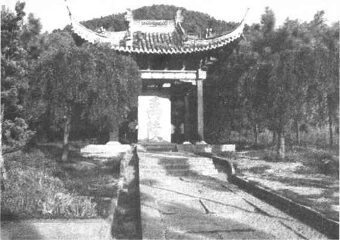
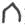
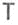
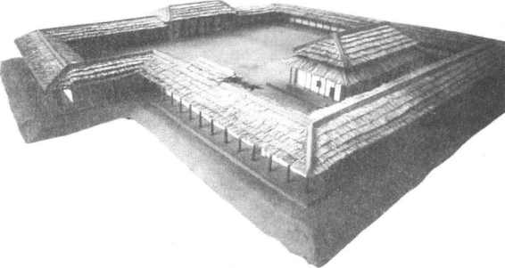
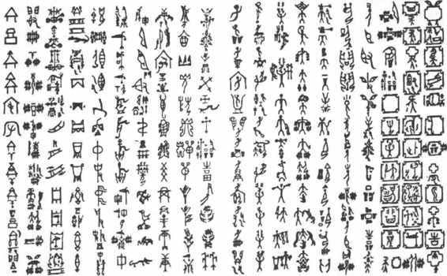

第三章
古代宗法和家族制度

第一节
宗法制度的产生及其早期发展
家族由若干具有亲近的血缘关系的家庭组成。自进入文明时代以来，我国古代的家族一直是以父系的血缘联结的，而若干出自同一男性祖先的家族又组成宗族。《尔雅·释亲》即把由同一高祖父传下的四代子孙称为宗族，实际上有些宗族还可包括更多的世代。家族和宗族密不可分，有时甚至合二为一。所以，我国古代的家族制度与宗法制度有着密切的关联，要了解古代的家族制度，必须首先对宗法制度有所认识。
所谓宗法，是指一种以血缘关系为基础，标榜尊崇共同祖先，维系亲情，而在宗族内部区分尊卑长幼，并规定继承秩序以及不同地位的宗族成员各自不同的权利和义务的法则。它的具体内容在有关西周、春秋社会情况的文献记载中有比较详细的说明，其起源则可追溯到更远的世代。
宗法制度是由父系氏族社会的家长制演变而来的。在父系氏族社会，世系以父系计算，父家长支配着家族成员，甚至对他们有生杀予夺之权。在父系氏族社会后期，随着生产力的发展，剩余产品的增加，私有财产也产生了。父家长死后，他的权力和财产需要有人继承，于是习惯上就会规定一定的继承程序，而一代代父家长生前的权威在其死后仍然使人敬畏，子孙们幻想得到他们亡灵的庇护，于是又产生了对男性祖先的崇拜以及随之而来的种种祭祀祖先的仪式。凡此种种，都为宗法制度的萌芽准备了适宜的土壤。
进入阶级社会以后，宗法制度逐渐形成，它主要实行于统治阶级内部，成为调节统治阶级内部关系，维护贵族世袭统治，奴役劳动人民的工具。
父系氏族后期，部落联盟的领袖在一定程度上已经具有后世国王的权力，但这一职位是由各部落首长协商推选的，这就是“禅让”。夏禹死后，其子启继位，把禅让的官天下变成传子的家天下，开创了我国历史上第一个奴隶制王朝。（图3—1）从此，如《礼记·礼运》所说，“大人世及以为礼”（以子继父为世，以弟继兄为及），王位世袭成为制度。夏王朝的世系可以明白地追述，据《史记·夏本纪》记载，夏王朝先后有14世17王，其中两次是弟继兄位，一次是弟之子死后王位复归于兄之子，其余都是子继父位。《礼运》所说的“大人”，不仅指王，也包括大小奴隶主贵族在内。自夏王以下，各级奴隶主贵族都是“世及以为礼”，这种世袭统治权的确立可以说与宗法制度的形成互为因果。

图3-1 浙江绍兴大禹陵
在确定政治、经济等方面特权地位继承秩序的同时，又规定这种特权地位的继承人应该依照血缘关系的亲疏远近，把部分权力和财产分配给宗族中的其他成员。古史记载，夏王中康失国，其子相曾奔依同姓诸侯斟灌氏、斟寻氏。斟灌氏、斟寻氏当即夏王宗族，他们被封为诸侯，既分享到部分统治权，又承担为夏王效力的义务。其他奴隶主贵族在其宗族内部，也当有类似的区别尊卑等级并明确各自相应的权利和义务的办法。
确定继统秩序和在宗族内部依血缘关系区分尊卑亲疏、规定各自的权利和义务，二者相辅相成，是宗法制度的基本内容。与此相适应，为了加强宗族内部的凝聚力，祖先崇拜被推进到新的高度。从文字学上看，宗族、宗法的“宗”，是个会意字。《说文·宀部》：“宗，尊祖庙也。”在甲骨文中，宗字作，象宫室屋宇之形，则表示祖先的神主牌位。宗的本义就是祭祀祖先的场所，亦即祖庙、宗庙。《周礼·考工记·匠人》：“夏后氏世室，堂修二七，广四修一。”郑玄注：“世室者，宗庙也。”不管夏王的宗庙是否真的称为世室，夏王之有宗庙，已被考古发掘所证明。在河南偃师二里头夏代都城遗址中，发现了一处大型宫殿建筑群基址，规模宏大，结构复杂，总面积达一万平方米，四周为廊庑式建筑，中为庭院和殿堂，其平面布局与后世的宗庙十分相似。经专家研究论定，这一宫殿基址是夏代宗庙建筑遗存。［1］（图3—2）宗庙祭祀是头等重要的大事，由宗族中地位最高的成员主持。同一宗族的人具有共同的祖先，共同的宗庙，共同的姓氏，共同的墓地，同受宗法制度的约束。

图3-2 二里头宫殿复原模型
到了商代，宗法制度更趋严密。近代学者王国维认为，“殷（商）以前无嫡庶之制”，“商之继统法以弟及为主，而以子继辅之，无弟然后传子”，立子立嫡之制“实自周公定之”，由于区分嫡庶，从而产生宗法制度。他的结论是商代以前无宗法，宗法制度以及随之而来的“封建子弟之制、君天子臣诸侯之制”等，都是在西周之初制定的。［2］这种看法曾经颇有影响，但并不符合历史事实，现多数学者已不再信从。夏代文献不足征，在资料缺乏的情况下，对初期的宗法制度，我们只能作大致的勾勒。商代则不同，殷墟卜辞的发现为研究商史提供了一大批第一手的资料。利用卜辞和其他考古发掘所得资料，联系文献记载，我们对宗法制度在商代的存在和发展，可以作出比较明确的描述。
商代存在着宗族组织应无疑义。卜辞屡见“王族”、“多子族”、“三族”、“五族”等名称。多子族与王族有血缘关系，实际上就是王族的分支。商代作战，把族作为用兵的单位，卜辞中提到动员军队，即常见“三族”、“五族”等用语。在作为贵族专有物的商代铜器上往往铸有表示器主所有权的图形文字，这种图形文字具有族徽性质，许多研究者称之为族铭文字。一个族铭文字代表一个奴隶主贵族家族或宗族。据统计，商代铜器上的族铭文字有六七百之多，有些族铭文字是复合的，可能表示是某一较大的宗族的支派。众多繁复的族铭文字，向我们展示了商代奴隶主贵族阶级中宗族林立的情景。（图3—3）清代末年，在直隶（今河北）保定南乡出土三件商代有铭铜戈，三戈的铭文分别是器主同一宗族祖辈八人、父辈六人、兄辈七人的日名。［3］祖辈排列在最前面的一位称“大祖”，父辈排列在最前面的两位称“大父”，兄辈排列在最前面的一位称“大兄”。称谓上加“大”的，显然分别是祖辈、父辈、兄辈之长。我们也可以从中窥见商代宗族组织的一个侧面。值得注意的是《左传·定公四年》中关于周初分封诸侯的一段记载，其中提到成王分周公以“殷民六族：条氏、徐氏、萧氏、索氏、长勺氏、尾勺氏、使帅其宗氏，辑其分族，将其类丑”，又提到分康叔以“殷民七族：陶氏、施氏、繁氏、锜氏、樊氏、饥氏、终葵氏”，分唐叔以“怀姓九宗，职官五正”。显然，所谓“殷民六族”、“殷民七族”、“怀姓九宗”在商代早已存在。而“宗氏”、“分族”、“类丑”的区别则说明宗族内部又有不同的层次。“宗氏”当即宗族长本支的子弟等，“分族”当指族中旁支。相对而言，“宗氏”是大宗，“分族”是小宗，“类丑”则是附属于该宗族的奴隶或平民。

图3-3 形形色色的商代族铭文字
王族的宗族长就是商王，多子族的宗族长称“子”。从卜辞、铜器铭文和文献资料来看，商代称宗族长为“子”是普遍现象，后世把宗族长称为“宗子”，正与此一脉相承。商王和多子族宗族长的关系，也如后世的大宗之与小宗。商王作为天下大宗固不用说，“子”对其族人来讲，也是君临一切。许多铜器铭文表明，宗族成员在接受“子”的命令时诚惶诚恐，在得到“子”的赏赐时欢欣鼓舞。宗族长在宗族内部具有至高无上的特权地位。无论是商王还是“子”，他们的权位都是世袭的。王国维看到“自成汤至于帝辛，三十帝中，以弟继兄者凡十四帝”，“其以子继父者，亦非兄之子而多为弟之子”，因而断定商以前无立子之制，商代的继统法主要是兄终弟及，父死子继则属例外。但如透过表面现象，仔细研究包括成汤以前许多世代在内的商代王室世系，不难发现其继统法一开始就是以子继为主。以弟继兄，或者因为兄本无子，或者因为兄子年幼而国赖长君，所以由弟摄代，或者因为王室内乱，都是在不正常的情况下发生的。当然，商代前期王位兄终弟及的现象较多，氏族社会遗留的习惯也可能起着一定的作用。而即便是以弟继兄，也依照长幼次序，有兄在，弟不得立，这本身也符合宗法制度的精神。至于继位之弟，后或传己子，或传兄子，这两种情况又从不同的侧面反映出传子的观念深入人心。以父子相承的继统法为重，这在商王对其祖先所作的名目繁多的祭祀中也有所反映。商王对父、祖、曾祖等直系先王的祀典与对伯叔父、伯叔祖等旁系先王的祀典相比，次数更为频繁，祭品更为丰隆。有一种按照严格规律进行的经常性的祀典，即按一定的祭法周而复始地依次祭祀祖先，研究者们称之为周祭。在周祭中，凡所自出之祖，其妣必见于祀典；非所自出之祖，其妣则不见。也就是说，直系先王及其法定配偶都是受祭者，而旁系先王虽然本身受祭，他们的法定配偶却不被列入祭谱。此外，卜辞所见的“大宗”、“大示”、“小宗”、“小示”，很可能也是按直系、旁系区分的。对直系和旁系的不同待遇，正说明在商人的观念中以子继父是正统所系。
所谓嫡庶之制，就是在多妻的情况下，区分作为法定配偶的正妻和众妾身份上的尊卑，并从而规定正妻所生的嫡长子的优先继承权。区分嫡庶是宗法制度进一步发展的结果，并不是宗法制度产生的前提。如上所述，商王祭祖重直系而轻旁系，这证明立长立嫡之法在商代已有它的根基。不仅如此，有的研究者指出，与“嫡”、“庶”二字意义相近的词语在商代已经出现，卜辞中商王每称死去的父王为“帝”，而从不称旁系先王为“帝”。据《说文》，“嫡”字从女啻声，“啻”字又正是从帝得声。《尚书·召诰》提到“皇天上帝，改厥元子。兹大国殷之命”，可见商王本被认为是上帝的嫡系后代。所以卜辞用以称父王的“帝”，应该就是“嫡”字的前身。卜辞中又屡见介子、介兄、介父、介母、介祖等亲属称谓，“介”有“副”的意思，古书习见。《礼记·曾子问》即称庶子为“介子”，《内则》又称嫡长子以外的众子之妻为“介妇”，卜辞亲属称谓中所见“介”字应与此同例，与“嫡庶”的“庶”意义十分相近。［4］商王多妻，但每一代商王往往只有一个配偶死后能享受王室的特祭，研究者们称之为法定配偶，这种法定配偶应该具有正妻的身份。有的享年较高的商王或有不止一个法定配偶，如武丁有妣辛、妣戊、妣癸三个法定配偶，这可能是前后继娶，三人相继都是武丁的正妻。而武丁的其他配偶名见卜辞的就有六十多人，她们与法定的配偶尊卑有别，其间显然存在着嫡庶之分。《史记·殷本纪》记载：“帝乙长子曰微子启，启母贱，不得嗣。少子辛，辛母正后，辛为嗣。”《吕氏春秋·当务》则说微子启与纣（即辛）同母，只是其母生微子启时尚为妾，生纣时已正位为妻。帝乙想立微子启为太子，“太史据法而争之曰：‘有妻之子而不可置妾之子。’纣故为后”。二书说法有些不同，但强调商代末年立嗣已经优先考虑嫡子这一点则是一致的。以后周代立嫡立长之制，实际上是承袭商制而更为严格。商代嫡子继承王位，庶子则被分封。微子启即被封于微。《史记·殷本纪》说商代王子受封，以国为姓，有殷氏、来氏、宋氏、空桐氏、稚氏、北殷氏、目夷氏等。周代封建子弟，君天子臣诸侯，也是承袭商制而更加扩大。
既然在商代存在宗族组织，宗族内部的继统法以传子为主，并且由此产生了直系、旁系之分，嫡庶之分，大宗小宗之分，我们可以断言，所谓商代无宗法的说法是靠不住的。商代不仅有宗法制度，而且商代的宗法制度与在夏代的初期形态相比，已大大发展了。孔子说：“殷因于夏礼，所损益，可知也；周因于殷礼，所损益，可知也。”他讲的“礼”，也应包括宗法制度在内。